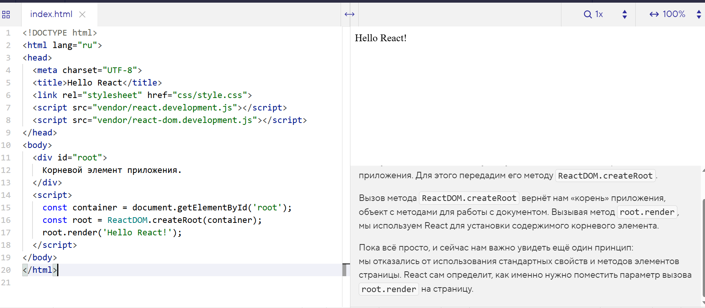

Начнём постепенно использовать возможности библиотек для работы с документом. Сначала нам нужно указать, где находится корневой элемент приложения. Для этого передадим его методу ReactDOM.createRoot.
Вызов метода ReactDOM.createRoot вернёт нам «корень» приложения, объект с методами для работы с документом. Вызывая метод root.render, мы используем React для установки содержимого корневого элемента.
Пока всё просто, и сейчас нам важно увидеть ещё один принцип: мы отказались от использования стандартных свойств и методов элементов страницы. React сам определит, как именно нужно поместить параметр вызова root.render на страницу.
<!-- React и ReactDOM через CDN -- >
<script crossorigin src="https://unpkg.com/react@18/umd/react.development.js"></script>
<script crossorigin src="https://unpkg.com/react-dom@18/umd/react-dom.development.js"></script>
<!-- Babel для трансформации JSX -->
<script src="https://unpkg.com/@babel/standalone/babel.min.js"></script>
